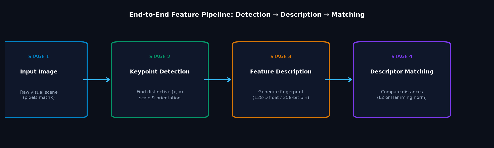
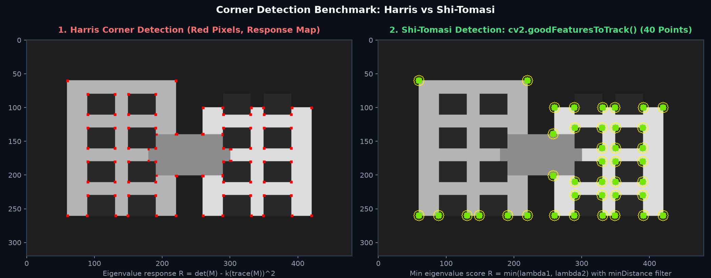
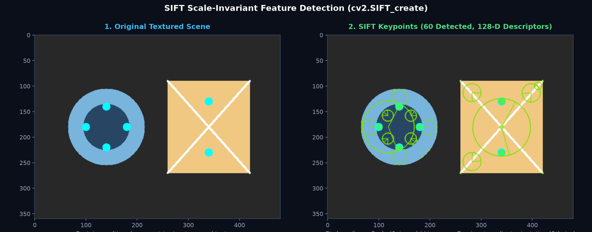
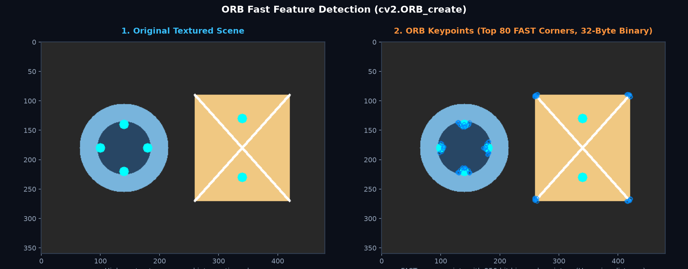
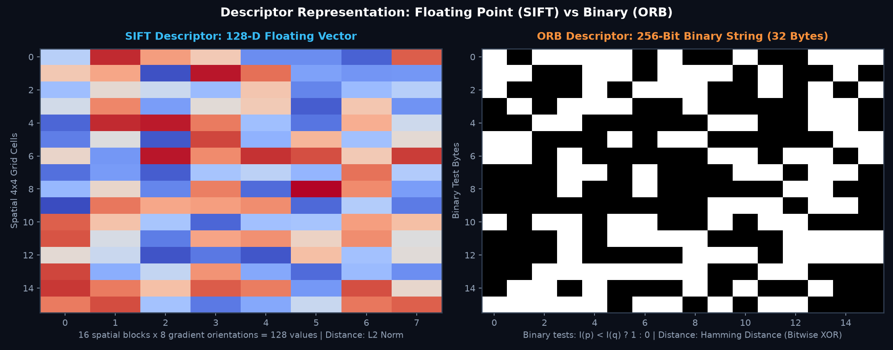
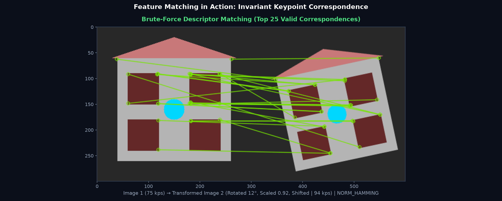

Do alag-alag angles, lighting ya zoom se li gayi photos mein same object ko kaise pehchanein? Features (Keypoints + Descriptors) image ke wo distinctive landmarks hote hain jo camera movement ke bawajood invariant rehte hain. Seekhein Harris, Shi-Tomasi, SIFT, ORB aur Feature Matching!
Maan lijiye aapke paas ek hi historic monument (jaise Taj Mahal) ki do alag-alag photos hain: ek subah li gayi door se, aur ek shaam ko paas se thode tirche angle se. In dono photos ko match karne ke liye hum kya dekhte hain?
Neela aasmaan ya safed marble ka plain hissa dono photos mein ek jaisa lagta hai (no uniqueness). Lekin gumbad ki choti, minar ke corners, aur khidkiyon ke sharp patterns dono images mein turant pehchane ja sakte hain! Inhi unique points ko hum Image Features kehte hain.
Image mein feature kahan situated hai: Pixel coordinate (x, y), size/scale (σ), orientation angle (θ), aur response strength.
Keypoint ke aas-paas ke pixel neighborhood ka numerical fingerprint. Do alag images ke keypoints ko compare karne ke liye descriptors use hote hain.

Computer vision mein Corners sabse primary features hote hain kyunki agar aap kisi chote window ko kisi bhi direction (X ya Y) mein move karenge, to pixel intensity mein massive change aayega (unlike straight edges jahan line ke along koi intensity change nahi dikhta — Aperture Problem).
cv2.cornerHarris)Harris detector image gradients se 2×2 auto-correlation matrix M banata hai aur corner response score nikaalta hai:
Agar R > 0 bada positive number ho, to wo region ek Corner hai!
dst = cv2.cornerHarris(gray_float32, blockSize=2, ksize=3, k=0.04)cv2.goodFeaturesToTrack)1994 mein Jianbo Shi aur Carlo Tomasi ne Harris score ko simplify aur improve kiya: R = min(λ1, λ2). Agar dono eigenvalues threshold se bade hain, tabhi corner declare hota hai.
corners = cv2.goodFeaturesToTrack(gray, maxCorners=25, qualityLevel=0.01, minDistance=10)| Comparison Feature | Harris Corner Detector | Shi-Tomasi Detector (goodFeaturesToTrack) |
|---|---|---|
| Scoring Formula | R = det(M) - k(trace(M))2 |
R = min(λ1, λ2) (Strict & Clean) |
| Output Format | Full response map (same height × width as image). | Clean array of discrete [[x, y]] point coordinates. |
| Spacing Control | Manual post-processing thresholding required. | Built-in minDistance prevents corner clustering! |
| Best Application | Mathematical analysis, gradient study. | Motion tracking (Optical Flow), point features. |

import cv2
import numpy as np
img = cv2.imread('blocks.png')
gray = cv2.cvtColor(img, cv2.COLOR_BGR2GRAY)
# 1. Harris Corner Detection (requires float32 input)
gray_f = np.float32(gray)
dst = cv2.cornerHarris(gray_f, blockSize=2, ksize=3, k=0.04)
# Threshold: Top 1% response pixels ko mark karein
img_harris = img.copy()
img_harris[dst > 0.01 * dst.max()] = [0, 0, 255] # Red
# 2. Shi-Tomasi Corner Detection
corners = cv2.goodFeaturesToTrack(gray, maxCorners=30, qualityLevel=0.01, minDistance=10)
img_st = img.copy()
if corners is not None:
for c in np.int32(corners):
x, y = c.ravel()
cv2.circle(img_st, (x, y), 5, (0, 255, 0), -1) # Green
print(f"Shi-Tomasi detected {len(corners)} distinctive corners!")Corners rotation ke liye to invariant hote hain, lekin Scale (zoom in / zoom out) ke liye nahi hote! Jab camera kisi object ke paas jata hai, to ek chhota sa sharp corner bada ho kar ek smooth curve ban jata hai, jisse Harris corner fail ho jata hai.
1999 mein David Lowe ne SIFT develop kiya jo dono scale aur rotation ke liye robust hai:
Image ko alag-alag octave scales par blur karke Difference-of-Gaussians (DoG) banata hai. Isse feature chahe kitna bhi zoom ho, wo pehchana jata hai.
Keypoint ke 16×16 neighborhood ko 16 spatial blocks (4×4) mein divide karke 8 gradient orientation bins nikaalta hai: 16 × 8 = 128 floating-point values!
cv2.SIFT_create() ke saath fully available hai!

import cv2
img = cv2.imread('scene.png')
gray = cv2.cvtColor(img, cv2.COLOR_BGR2GRAY)
# SIFT detector initialize karein
sift = cv2.SIFT_create()
# Keypoints aur 128-D Descriptors extract karein
keypoints, descriptors = sift.detectAndCompute(gray, None)
print(f"Detected keypoints: {len(keypoints)}")
print(f"Descriptors shape: {descriptors.shape}") # (N, 128) float32
# Rich keypoints draw karein (scale & orientation ke saath)
sift_img = cv2.drawKeypoints(
img, keypoints, None,
flags=cv2.DRAW_MATCHES_FLAGS_DRAW_RICH_KEYPOINTS
)SIFT accurate to hai, par ye bohot slow hai aur har keypoint ke liye 512 bytes (128 floats × 4 bytes) consume karta hai. Mobile phones ya real-time drones par SIFT 30 FPS par run nahi ho sakta!
Iska solution OpenCV lab ne 2011 mein banaya: ORB (Oriented FAST and Rotated BRIEF):
I(p) < I(q) se 32 bytes (256 bits) ka binary string banata hai!
| Feature Attribute | SIFT (Scale-Invariant Feature Transform) | ORB (Oriented FAST & Rotated BRIEF) |
|---|---|---|
| Speed & Performance | Heavy & Slow (suitable for offline high-precision tasks). | Ultra-Fast (ideal for mobile, drones, real-time SLAM). |
| Descriptor Format | 128 Floating-point numbers (512 bytes per point). | 256 Binary bits (sirf 32 bytes per point!). |
| Matching Distance Metric | L2 Norm (Euclidean Distance): cv2.NORM_L2 |
Hamming Distance (Bitwise XOR): cv2.NORM_HAMMING |
| Scale & Rotation Invariance | High robustness across wide scale and rotation variations. | Moderate scale pyramid, good in-plane rotation invariance. |

import cv2
img = cv2.imread('scene.png')
gray = cv2.cvtColor(img, cv2.COLOR_BGR2GRAY)
# ORB detector initialize karein (max 500 features)
orb = cv2.ORB_create(nfeatures=500)
kp_orb, des_orb = orb.detectAndCompute(gray, None)
print(f"ORB detected: {len(kp_orb)} keypoints")
print(f"ORB descriptor shape: {des_orb.shape}, dtype: {des_orb.dtype}")Ek baar dono images ke descriptors nikalne ke baad, hum unhe match karte hain. Brute-Force Matcher (cv2.BFMatcher) Image 1 ke har descriptor ko Image 2 ke saare descriptors se compare karta hai aur sabse kam distance wale pair ko connect karta hai.
| Descriptor Type | Required Matcher Norm Flag | Matching Principle |
|---|---|---|
| ORB / BRIEF (Binary) | cv2.NORM_HAMMING |
Bitwise XOR + CPU popcount. Do binary strings ke kitne bits alag hain count karta hai. Super fast! |
| SIFT / SURF (Floating) | cv2.NORM_L2 |
Euclidean distance √(∑(ai - bi)2). Floating vector distance. |
SIFT matching mein aksar galat pairs match ho jate hain. David Lowe ne iske liye Ratio Test propose kiya: knnMatch(k=2) se har keypoint ke top 2 best matches mangwao (m aur n). Agar best match (m) second-best match (n) se kaafi behtar (closer) hai:
Tabhi us match ko valid maana jata hai, warna ambiguous maan kar drop kar diya jata hai!

import cv2
img1 = cv2.imread('scene_original.png')
img2 = cv2.imread('scene_transformed.png')
# 1. ORB features detect karein
orb = cv2.ORB_create(nfeatures=400)
kp1, des1 = orb.detectAndCompute(img1, None)
kp2, des2 = orb.detectAndCompute(img2, None)
# 2. BFMatcher initialize karein (Binary descriptors ke liye NORM_HAMMING zaroori hai!)
bf = cv2.BFMatcher(cv2.NORM_HAMMING, crossCheck=True)
matches = bf.match(des1, des2)
# Distance ke hisaab se sort karein (sabse best matches pehle)
matches = sorted(matches, key=lambda m: m.distance)
print(f"Kul {len(matches)} matching pairs mile!")
# 3. Top 20 matches visualize karein
matched_img = cv2.drawMatches(
img1, kp1, img2, kp2, matches[:20], None,
flags=cv2.DrawMatchesFlags_NOT_DRAW_SINGLE_POINTS
)Feature detection aur description computer vision ke sabse powerful tools hain:
Smartphone camera ko ghuma kar panoramic photo lete waqt, software consecutive frames ke SIFT/ORB features match karta hai aur Homography matrix nikaal kar unhe seamlessly blend karta hai!
Autonomous vacuum cleaners aur drones kamre ke corners aur visual landmarks ko track karke live 3D map banate hain aur apni exact position calculate karte hain.
Google Lens kisi product ya book cover ki photo se uske local descriptors nikaalta hai aur database ke millions of images ke saath instant match karta hai.
Table par rakhi hui kisi book cover ya marker image ke keypoints detect karke virtual 3D characters ko uske upar perfectly stabilize kiya jata hai.
cv2.NORM_L2 use karnacv2.NORM_HAMMING use karein!
cornerHarris mein pass karnacv2.error: (-215:Assertion failed) src.type() == CV_32FC1.np.float32(gray) mein convert karein!
bf.knnMatch(des1, des2, k=2) call karein jisse har keypoint ke do matches milein!
m.distance < 0.75 * n.distance) ka kya uddeshya hai?goodFeaturesToTrack) mein minDistance parameter ka kya fayda hota hai?minDistance spatial suppression provide karta hai, jisse detected corners poore object par well-distributed rehte hain aur clustering nahi hoti!
Ab jab humne geometric shapes aur invariant local features ko extract aur match karna seekh liya hai, agle topic mein hum image ke tonal distribution ko analyse karna seekhenge: kaise Histograms se andheri ya overexposed photos ko diagnose karte hain aur CLAHE se medical scans aur low-light images ka contrast restore karte hain!